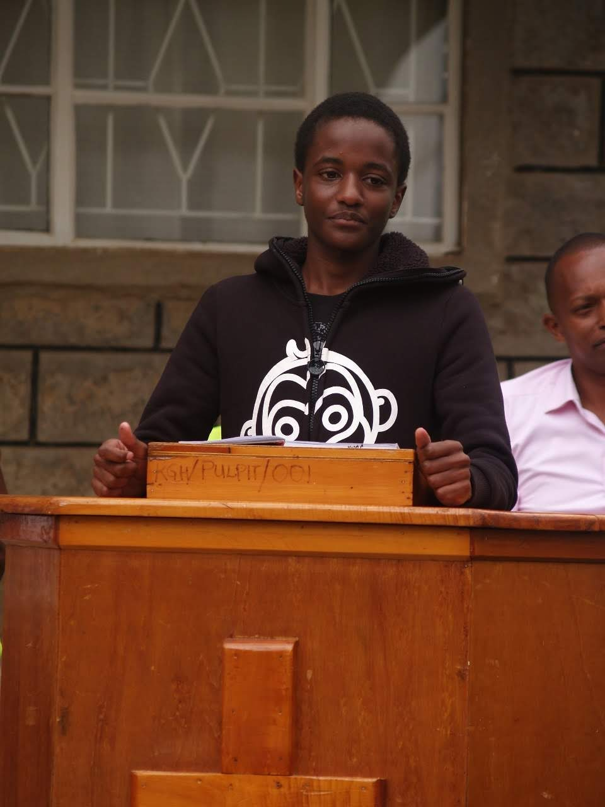

The picture represents my love for photography and represents looking at the world from different lenses"perspective to see the beauty around us
About Me

Hello there, I am Jonathan Mugo and welcome to my Portfolio. I am a vibrant and creative person seeking to explore the world and fill my skillset with the most important and upcoming skills. I seek to increase my knowledge im the many different aspects that life has to offer.Get to know more about more through this portfolio.
-
Background
I was born and raised in the country of Kenya in the country of Kajiado. I am currently a post Secondary student from Kagumo Highschool and I'm waiting for admission into the university of choice to pursue a career in Medicene and Surgery.
I am currently interested in the technology of computers, coding and web and game development and thus I decided to take the rare opportunity presented by the DirectEd Dev as I seek to expand my knowledge and skillset in this field.
-
Hobbies and Skills
- Learning Languages. I am partly fluent Japanese and Spanish and I can write in Japanese. I am also looking to learn Mandarin, French and Arabic
- Coding. I am taking a programming course to be skilled in programming.
- Reading Novels. Mostly Fantasy, Thriller and Mystery novels.
- Photography.